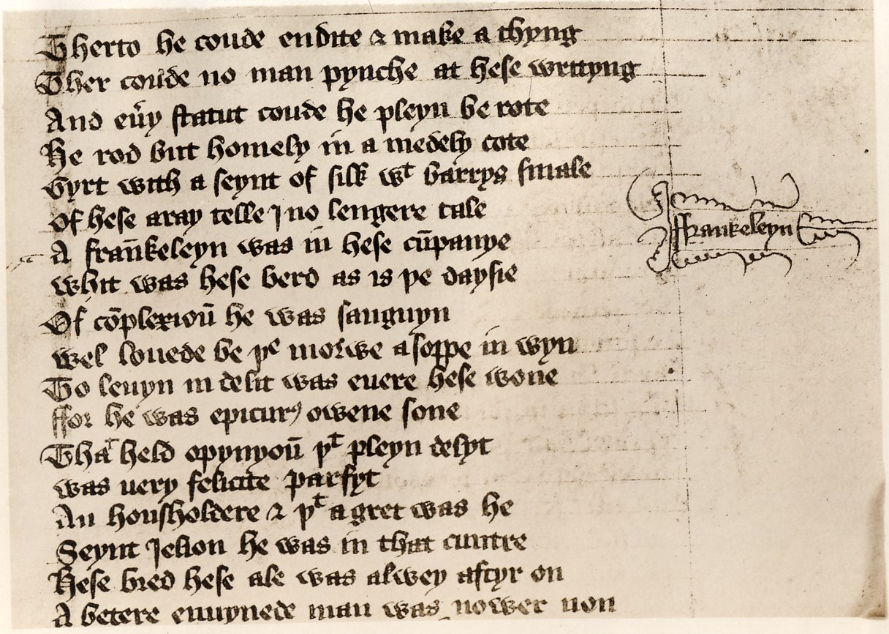
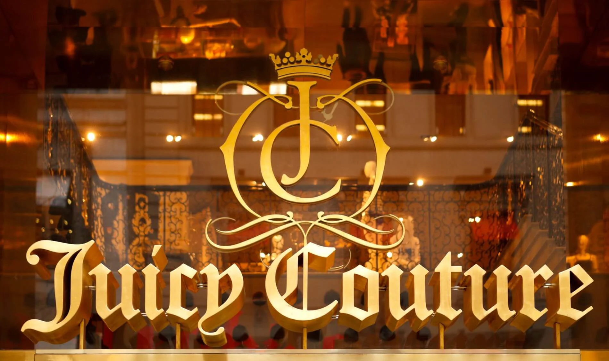

On this page

Gothic Blackletter is significant for its deep historical roots in medieval manuscripts and its role in early printing.
Designed by:
Multiple historical designers
Johannes Gutenberg should be mentioned as the inventor of the printing press who formalised Gothic bookhand into Blackletter which was more of a style than an established typeface
Foundry:
Various (hand-drawn, later pressed)
Country:
🌍 Germany
Year:
1100’s AD
Intent
- For readability in manuscripts
- Expressed authority and cultural identity (Western-European-Gothic tradition)
- Loved as functional and decorative
Context
- Gothic architecture
- Printing press emergence
- Focus on dense, legible columns
- Preference for ornate, formal scripts
Type classification
- Primary: Blackletter
- Secondary: Textura, Fraktur, Rotunda
Characterised by
- Angular, vertical strokes
- Dense, narrow letters
- Decorative serifs and intricate shapes
- Historic, formal tone
Examples in use



- Certificates and diplomas
Why designers still use it
- Conveys tradition and authority
- Decorative, period-accurate style
- Instantly recognisable
When not to use it
- Don’t use it
Usage
Use when you want tradition and formality — not neutrality or modernity.
Why it matters for UX
Blackletter shows how strongly a typeface carries history and meaning: one glance says tradition, ceremony or heavy metal. In UI that association is so strong that it almost always overpowers the content, which is exactly why it's worth studying.
Try it: read it, then replace it (15 minutes)
- Set the sentence "Your order has been shipped" in a blackletter font and in a neutral sans-serif.
- Show both to a classmate and ask how each makes them feel.
- List three products where blackletter would be the right choice (a brewery, a certificate, a band).
Media
Resources
Key takeaways
- Blackletter comes from medieval manuscripts and the first printed books.
- It carries strong associations of tradition, authority and ceremony.
- Keep it for logos and display; never use it for interface text.